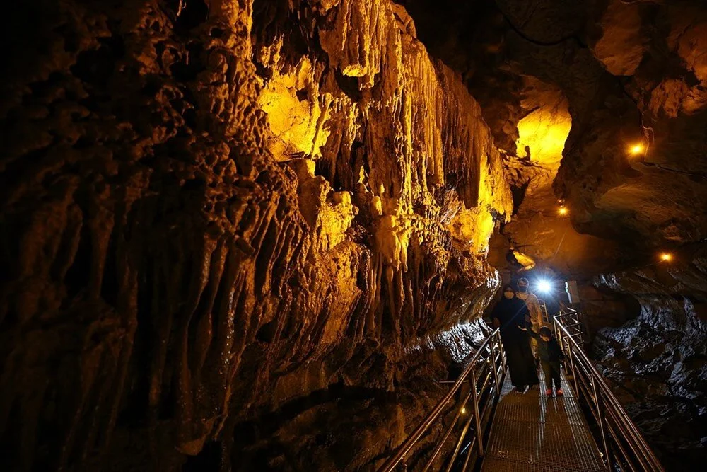

Çal Mağarası
Çal Mağarası, Türkiye'nin Karadeniz Bölgesi'nde, Trabzon ilinin Düzköy ilçesinde yer alan, doğanın insanlara sunduğu en etkileyici güzelliklerden biridir. Dünyanın en uzun ikinci mağarası olarak bilinen Çal Mağarası, eşsiz yer altı oluşumları, sarkıtları ve dikitleriyle ziyaretçilerini büyüler. Mağara, hem doğa tutkunları hem de macera arayanlar için kaçırılmaması gereken bir destinasyondur.
"Çal Mağarası, doğanın sabrıyla yonttuğu bir sanat eseri, derinliklerinde sakladığı sırlarla insanı büyüler."
Tarihçesi Ve Keşif
Çal Mağarası, bilimsel olarak ilk kez 1990'lı yılların başında keşfedilmiştir. Mağaranın uzunluğu yaklaşık 8 kilometre olarak tahmin edilmekte olup, şu ana kadar 1,5 kilometrelik kısmı turizme açılmıştır. Mağara, Karstik kayaçların erimesiyle oluşmuş olup, binlerce yıl boyunca doğal yollarla şekillenmiştir. Bu süreç, mağarada günümüzde hayranlık uyandıran sarkıtlar, dikitler ve yer altı dereleri gibi oluşumları meydana getirmiştir.
Doğal Yapısı
Çal Mağarası, ziyaretçilerine birbirinden farklı doğal güzellikler sunar. Mağaranın içinde, yer yer genişleyen ve daralan galeriler, göletler ve şelaleler yer alır. Mağara boyunca akan küçük bir yer altı deresi, mağaranın mistik atmosferine ayrı bir güzellik katar. Mağaranın içindeki havalandırma ve nem oranı, astım ve nefes darlığı gibi sağlık sorunları yaşayan ziyaretçilere iyi geldiği söylenir.
Mağaranın duvarlarında görülen çeşitli mineraller ve bu minerallerin oluşturduğu renk cümbüşü, Çal Mağarası'nın en dikkat çekici özelliklerinden biridir. Ayrıca, mağara boyunca ilerlerken karşılaşacağınız doğal kaya oluşumları ve taş devri kalıntıları, mağaranın tarihi ve jeolojik önemini gözler önüne serer.
Turizm Ve Ziyaret
Çal Mağarası, son yıllarda yapılan düzenlemelerle turizme kazandırılmıştır. Mağara içinde güvenli yürüyüş yolları, köprüler ve ışıklandırma sistemleri kurulmuştur. Bu sayede ziyaretçiler, mağaranın derinliklerine rahatça ilerleyip, doğanın mucizesini yakından görebilirler. Mağara, dört mevsim ziyaret edilebilmekte olup, her mevsimde farklı bir güzellik sunar.
Mağara girişinde yer alan kafe ve dinlenme alanları, ziyaretçilerin mağara turu sonrasında keyifli vakit geçirebilecekleri mekanlar sunar. Ayrıca, mağaranın bulunduğu bölge, doğa yürüyüşleri ve fotoğrafçılık için de ideal bir ortam sağlar.
Ulaşım
Çal Mağarası, Trabzon şehir merkezine yaklaşık 50 kilometre uzaklıktadır. Trabzon’dan araçla Düzköy ilçesine, oradan da kısa bir yolculukla mağaraya ulaşabilirsiniz. Yol boyunca Karadeniz’in yemyeşil doğasının tadını çıkarabilirsiniz.


Tuba Büyüküstün Reply
Yazını okurken kendimi Çal Mağarası’nın derinliklerinde kaybolmuş gibi hissettim. Doğanın bu muazzam güzelliklerini sayende keşfetmek çok keyifliydi.